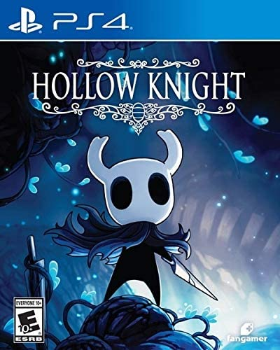
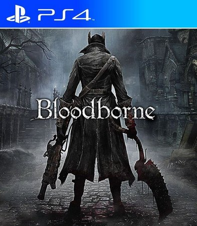

Hollow Knight
Desça no mundo de Hollow Knight! O premiado jogo ação/aventura de insetos e heróis. Explore cavernas serpenteantes, cidades antigas e ermos mortais. Lute contra criaturas malignas, alie-se a insetos bizarros. Descubra a história antiga e solucione mistérios enterrados no coração do reino.

God of War
God of War se passa anos depois de God of War 3 e pode ser considerado, de certa forma, como um recomeço para a série. Depois de ter dizimado praticamente toda a mitologia grega, Kratos sobreviveu e fugiu da Grécia.

BloodBorne
Bloodborne é um jogo eletrônico de ação-aventura produzido pela From Software e publicado pela Sony Computer Entertainment a 24 de Março de 2015 em exclusivo para a PlayStation 4.